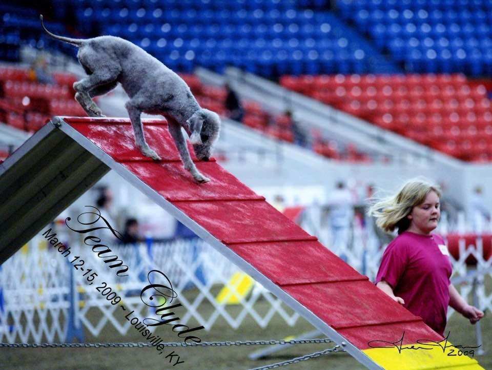
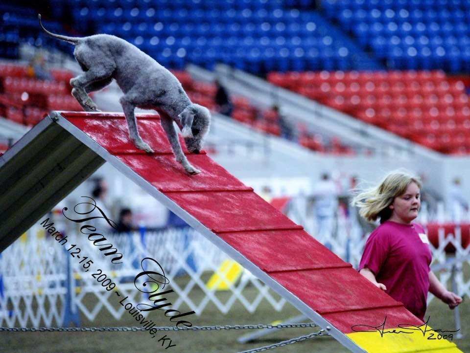

Breed History
The Bedlington Terrier is a breed of small dog named after the mining town of Bedlington, Northumberland in North East England. "Terrier" refers to a dog that goes underground to hunt. They are natural hunters, with a high prey drive to go after rodents.
About the Breed
The Bedlington Terrier is graceful, alert, intelligent, and entertaining. They are characteristically inquisitive, perceptive, opinionated and affectionate. Their great love of people and particular joy with children endears them to young and old. Bedlingtons are bright, clownish extroverts. They are always anxious to love, please, and be the center of attention whether in the show ring or in any room of your house.
Bedlington's in Sports
The Bedlington Terrier can excel in many dog sports outside of the conformation ring. With their natural hunting ability Barn Hunt, Earthdog and Scent work are a good fit. With their speed many do well in Fast CAT and Lure Coursing. Other common sports include Agility, Obedience, and Rally as Bedlingtons are intelligent and typically catch on to what is being asked of them quickly. Many also enjoy Dock Diving, where they jump into a large pool after their favorite toy.

 
